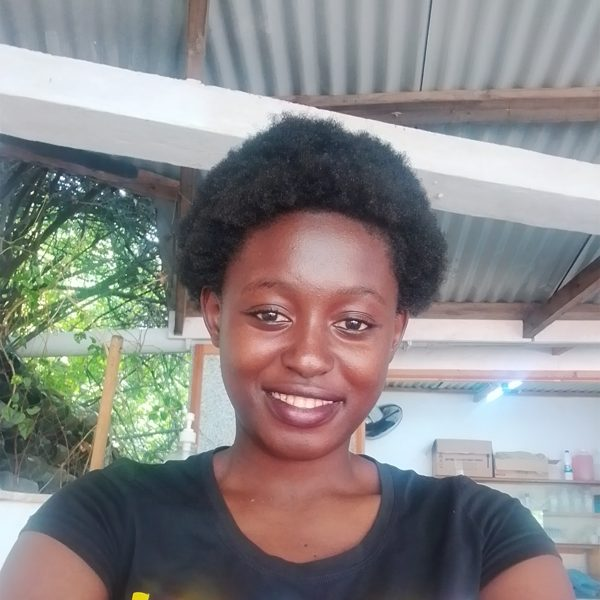

About Me
I am a Bachelor of Science in Fisheries and Aquaculture student at JKUAT. I enjoy watching films and series with unexpected plot twists when I have free time, travelling, swimming and exploring new places. I like to give my best and aim for a high standard in everything I do. During my first year, I undertook an attachment that gave me valuable practical exposure, new skills and a better understanding of the career I am pursuing. The experience strengthened my interest in fisheries and aquaculture.
A little about my goal: I want to keep building my knowledge and practical skills as I progress in fisheries and aquaculture.
Explore my academic journeyQuick Facts
- Full name: Mary Njira Komora
- Programme: Bachelor of Science in Fisheries and Aquaculture
- Institution: Jomo Kenyatta University of Agriculture and Technology (JKUAT)
- Home county: Kiambu
- Career interest: Fisheries and aquaculture practice